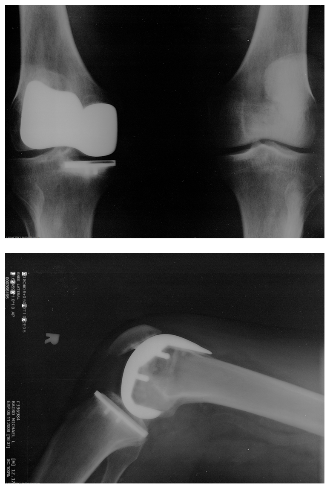
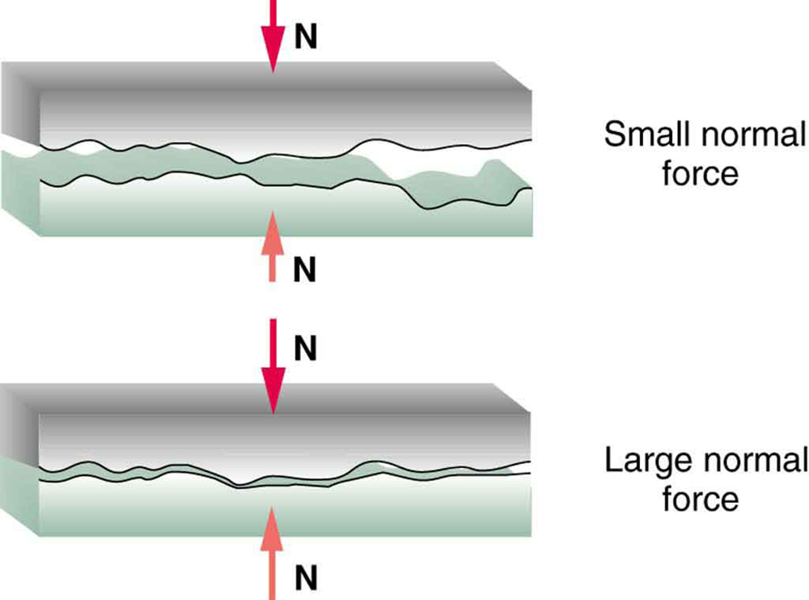
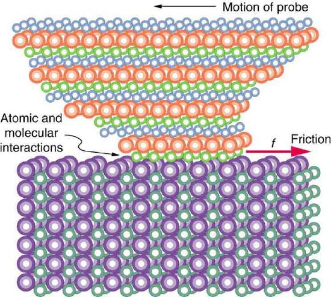
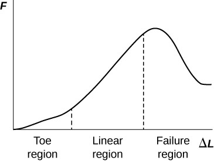

- Discuss the general characteristics of friction.
- Describe the various types of friction.
- Calculate the magnitude of static and kinetic friction.
Frictionis a force that is around us all the time that opposes relative motion between systems in contact but also allows us to move (which you have discovered if you have ever tried to walk on ice). While a common force, the behavior of friction is actually very complicated and is still not completely understood. We have to rely heavily on observations for whatever understandings we can gain. However, we can still deal with its more elementary general characteristics and understand the circumstances in which it behaves.
Friction is a force that opposes relative motion between systems in contact.
One of the simpler characteristics of friction is that it is parallel to the contact surface between systems and always in a direction that opposes motion or attempted motion of the systems relative to each other. If two systems are in contact and moving relative to one another, then the friction between them is calledkinetic friction. For example, friction slows a hockey puck sliding on ice. But when objects are stationary,static frictioncan act between them; the static friction is usually greater than the kinetic friction between the objects.
If two systems are in contact and moving relative to one another, then the friction between them is called kinetic friction.
Imagine, for example, trying to slide a heavy crate across a concrete floor—you may push harder and harder on the crate and not move it at all. This means that the static friction responds to what you do—it increases to be equal to and in the opposite direction of your push. But if you finally push hard enough, the crate seems to slip suddenly and starts to move. Once in motion it is easier to keep it in motion than it was to get it started, indicating that the kinetic friction force is less than the static friction force. If you add mass to the crate, say by placing a box on top of it, you need to push even harder to get it started and also to keep it moving. Furthermore, if you oiled the concrete you would find it to be easier to get the crate started and keep it going (as you might expect).
Figure is a crude pictorial representation of how friction occurs at the interface between two objects. Close-up inspection of these surfaces shows them to be rough. So when you push to get an object moving (in this case, a crate), you must raise the object until it can skip along with just the tips of the surface hitting, break off the points, or do both. A considerable force can be resisted by friction with no apparent motion. The harder the surfaces are pushed together (such as if another box is placed on the crate), the more force is nearly independent of speed.
![The figure shows a crate on a flat surface, and a magnified view of a bottom corner of the crate and the supporting surface. The magnified view shows that there is roughness in the two surfaces in contact with each other. A black arrow points toward the right, away from the crate, and it is labeled as the direction of motion or attempted motion. A red arrow pointing toward the left is located near the bottom left corner of the crate, at the interface between that corner and the supporting surface. The red arrow is labeled as f, representing friction between the two surfaces in contact with each other.](images/ch5/fig5-1-the-figure-shows-a-crate-on-a-flat-surfa.jpg)
The magnitude of the frictional force has two forms: one for static situations (static friction), the other for when there is motion (kinetic friction).
When there is no motion between the objects, themagnitude of static friction\(\displaystyle f_s\) is
where \(\displaystyle μ_s\) is the coefficient of static friction and \(\displaystyle N\) is the magnitude of the normal force (the force perpendicular to the surface).
MAGNITUDE OF STATIC FRICTION
Magnitude of static friction \(\displaystyle f_s\) is
where \(\displaystyle μ_s\) is the coefficient of static friction and \(\displaystyle N\) is the magnitude of the normal force.
The symbol \(\displaystyle ≤\) meansless than or equal to, implying that static friction can have a minimum and a maximum value of μsN. Static friction is a responsive force that increases to be equal and opposite to whatever force is exerted, up to its maximum limit. Once the applied force exceeds fs(max), the object will move. Thus
Once an object is moving, themagnitude of kinetic friction\(\displaystyle f_k\) is given by
where \(\displaystyle μ_k\) is the coefficient of kinetic friction. A system in which \(\displaystyle f_k=μ_kN\) is described as a system in whichfriction behaves simply.
MAGNITUDE OF KINETIC FRICTION
The magnitude of kinetic friction \(\displaystyle f_k\) is given by
where \(\displaystyle μ_k\) is the coefficient of kinetic friction.
As seen in Table, the coefficients of kinetic friction are less than their static counterparts. That values of \(\displaystyle μ\) in Table are stated to only one or, at most, two digits is an indication of the approximate description of friction given by the above two equations.
| Static Friction | Kinetic Friction | |
|---|---|---|
| System | \(\displaystyle μ_s\) | \(\displaystyle μ_k\) |
| Rubber on dry concrete | 1.0 | 0.7 |
| Rubber on wet concrete | 0.7 | 0.5 |
| Wood on wood | 0.5 | 0.3 |
| Waxed wood on wet snow | 0.14 | 0.1 |
| Metal on wood | 0.5 | 0.3 |
| Steel on steel (dry) | 0.6 | 0.3 |
| Steel on steel (oiled) | 0.05 | 0.063 |
| Teflon on steel | 0.04 | 0.04 |
| Bone lubricated by synovial fluid | 0.016 | 0.015 |
| Shoes on wood | 0.9 | 0.7 |
| Shoes on ice | 0.1 | 0.05 |
| Ice on ice | 0.1 | 0.03 |
| Steel on ice | 0.04 | 0.02 |
Coefficients of Static and Kinetic Friction
The equations given earlier include the dependence of friction on materials and the normal force. The direction of friction is always opposite that of motion, parallel to the surface between objects, and perpendicular to the normal force. For example, if the crate you try to push (with a force parallel to the floor) has a mass of 100 kg, then the normal force would be equal to its weight, \(\displaystyle W=mg=(100 kg)(9.80m/s^2)=980 N\), perpendicular to the floor. If the coefficient of static friction is 0.45, you would have to exert a force parallel to the floor greater than \(\displaystyle f_{s(max)}=μ_sN=(0.45)(980N)=440N\) to move the crate. Once there is motion, friction is less and the coefficient of kinetic friction might be 0.30, so that a force of only 290 N \(\displaystyle (f_k=μ_kN=(0.30)(980N)=290N)\) would keep it moving at a constant speed. If the floor is lubricated, both coefficients are considerably less than they would be without lubrication. Coefficient of friction is a unit less quantity with a magnitude usually between 0 and 1.0. The coefficient of the friction depends on the two surfaces that are in contact.
Find a small plastic object (such as a food container) and slide it on a kitchen table by giving it a gentle tap. Now spray water on the table, simulating a light shower of rain. What happens now when you give the object the same-sized tap? Now add a few drops of (vegetable or olive) oil on the surface of the water and give the same tap. What happens now? This latter situation is particularly important for drivers to note, especially after a light rain shower. Why?
Many people have experienced the slipperiness of walking on ice. However, many parts of the body, especially the joints, have much smaller coefficients of friction—often three or four times less than ice. A joint is formed by the ends of two bones, which are connected by thick tissues. The knee joint is formed by the lower leg bone (the tibia) and the thighbone (the femur). The hip is a ball (at the end of the femur) and socket (part of the pelvis) joint. The ends of the bones in the joint are covered by cartilage, which provides a smooth, almost glassy surface. The joints also produce a fluid (synovial fluid) that reduces friction and wear. A damaged or arthritic joint can be replaced by an artificial joint (Figure). These replacements can be made of metals (stainless steel or titanium) or plastic (polyethylene), also with very small coefficients of friction.

Other natural lubricants include saliva produced in our mouths to aid in the swallowing process, and the slippery mucus found between organs in the body, allowing them to move freely past each other during heartbeats, during breathing, and when a person moves. Artificial lubricants are also common in hospitals and doctor’s clinics. For example, when ultrasonic imaging is carried out, the gel that couples the transducer to the skin also serves to lubricate the surface between the transducer and the skin—thereby reducing the coefficient of friction between the two surfaces. This allows the transducer to move freely over the skin.
Exercise \(\displaystyle : Skiing Exercise
A skier with a mass of 62 kg is sliding down a snowy slope. Find the coefficient of kinetic friction for the skier if friction is known to be 45.0 N.
The magnitude of kinetic friction was given in to be 45.0 N. Kinetic friction is related to the normal force \(\displaystyle N\) as \(\displaystyle f_k=μ_kN\); thus, the coefficient of kinetic friction can be found if we can find the normal force of the skier on a slope. The normal force is always perpendicular to the surface, and since there is no motion perpendicular to the surface, the normal force should equal the component of the skier’s weight perpendicular to the slope. (See the skier and free-body diagram in Figure.)
![The figure shows a skier going down a slope that forms an angle of 25 degrees with the horizontal. The weight of the skier, labeled w, is represented by a red arrow pointing vertically downward. This weight is divided into two components, w perpendicular is perpendicular to the slope, and w parallel is parallel to the slope. The normal force, labeled N, is also perpendicular to the slope, equal in magnitude but opposite in direction to w perpendicular. The friction, f, is represented by a red arrow pointing upslope. In addition, the figure shows a free body diagram that shows the relative magnitudes and directions of w, f, and N.](images/ch5/fig5-3-the-figure-shows-a-skier-going-down-a-sl.jpg)
Substituting this into our expression for kinetic friction, we get
which can now be solved for the coefficient of kinetic friction \(\displaystyle μ_k\).
Solving for \(\displaystyle μ_k\) gives
Substituting known values on the right-hand side of the equation,
This result is a little smaller than the coefficient listed in Table for waxed wood on snow, but it is still reasonable since values of the coefficients of friction can vary greatly. In situations like this, where an object of mass m slides down a slope that makes an angle \(\displaystyle θ\) with the horizontal, friction is given by \(\displaystyle f_k=μ_kmgcosθ\). All objects will slide down a slope with constant acceleration under these circumstances. Proof of this is left for this chapter’s Problems and Exercises.
An object will slide down an inclined plane at a constant velocity if the net force on the object is zero. We can use this fact to measure the coefficient of kinetic friction between two objects. As shown in Example, the kinetic friction on a slope \(\displaystyle f_k=μ_kmgcosθ\). The component of the weight down the slope is equal to \(\displaystyle mgsinθ\) (see the free-body diagram in Figure). These forces act in opposite directions, so when they have equal magnitude, the acceleration is zero. Writing these out:
Solving for \(\displaystyle μ_k\), we find that
Put a coin on a book and tilt it until the coin slides at a constant velocity down the book. You might need to tap the book lightly to get the coin to move. Measure the angle of tilt relative to the horizontal and find \(\displaystyle μ_k\). Note that the coin will not start to slide at all until an angle greater than \(\displaystyle θ\) is attained, since the coefficient of static friction is larger than the coefficient of kinetic friction. Discuss how this may affect the value for \(\displaystyle μ_k\) and its uncertainty.
We have discussed that when an object rests on a horizontal surface, there is a normal force supporting it equal in magnitude to its weight. Furthermore, simple friction is always proportional to the normal force.
MAKING CONNECTIONS: SUBMICROSCOPIC EXPLANATIONS OF FRICTION
The simpler aspects of friction dealt with so far are its macroscopic (large-scale) characteristics. Great strides have been made in the atomic-scale explanation of friction during the past several decades. Researchers are finding that the atomic nature of friction seems to have several fundamental characteristics. These characteristics not only explain some of the simpler aspects of friction—they also hold the potential for the development of nearly friction-free environments that could save hundreds of billions of dollars in energy which is currently being converted (unnecessarily) to heat.
Figure illustrates one macroscopic characteristic of friction that is explained by microscopic (small-scale) research. We have noted that friction is proportional to the normal force, but not to the area in contact, a somewhat counterintuitive notion. When two rough surfaces are in contact, the actual contact area is a tiny fraction of the total area since only high spots touch. When a greater normal force is exerted, the actual contact area increases, and it is found that the friction is proportional to this area.

But the atomic-scale view promises to explain far more than the simpler features of friction. The mechanism for how heat is generated is now being determined. In other words, why do surfaces get warmer when rubbed? Essentially, atoms are linked with one another to form lattices. When surfaces rub, the surface atoms adhere and cause atomic lattices to vibrate—essentially creating sound waves that penetrate the material. The sound waves diminish with distance and their energy is converted into heat. Chemical reactions that are related to frictional wear can also occur between atoms and molecules on the surfaces. Figure shows how the tip of a probe drawn across another material is deformed by atomic-scale friction. The force needed to drag the tip can be measured and is found to be related to shear stress, which will be discussed later in this chapter. The variation in shear stress is remarkable (more than a factor of \(\displaystyle 10^{12}\) ) and difficult to predict theoretically, but shear stress is yielding a fundamental understanding of a large-scale phenomenon known since ancient times—friction.

PHET EXPLORATIONS: FORCES AND MOTION
Explore the forces at work when you try to push a filing cabinet. Create an applied force and see the resulting friction force and total force acting on the cabinet. Charts show the forces, position, velocity, and acceleration vs. time. Draw a free-body diagram of all the forces (including gravitational and normal forces).

where \(\displaystyle μ_s\) is the coefficient of static friction, which depends on both of the materials.
where \(\displaystyle μ_k\) is the coefficient of kinetic friction, which also depends on both materials.
📖 OpenStax College Physics, Section 5.1. openstax.org · CC BY 4.0
- Express mathematically the drag force.
- Discuss the applications of drag force.
- Define terminal velocity.
- Determine the terminal velocity given mass.
Another interesting force in everyday life is the force of drag on an object when it is moving in a fluid (either a gas or a liquid). You feel the drag force when you move your hand through water. You might also feel it if you move your hand during a strong wind. The faster you move your hand, the harder it is to move. You feel a smaller drag force when you tilt your hand so only the side goes through the air—you have decreased the area of your hand that faces the direction of motion. Like friction, thedrag forcealways opposes the motion of an object. Unlike simple friction, the drag force is proportional to some function of the velocity of the object in that fluid. This functionality is complicated and depends upon the shape of the object, its size, its velocity, and the fluid it is in. For most large objects such as bicyclists, cars, and baseballs not moving too slowly, the magnitude of the drag force \(F_D\) is found to be proportional to the square of the speed of the object. We can write this relationship mathematically as \(F_D\propto v^2 \). When taking into account other factors, this relationship becomes
where \(C\) is the drag coefficient, \(A\) is the area of the object facing the fluid, and \(\rho\) is the density of the fluid. (Recall that density is mass per unit volume.) This equation can also be written in a more generalized fashion as \(F_D = bv^2, \) where \(b\) is a constant equivalent to \(0.5 C\rho A.\) We have set the exponent for these equations as 2 because, when an object is moving at high velocity through air, the magnitude of the drag force is proportional to the square of the speed. As we shall see in a few pages on fluid dynamics, for small particles moving at low speeds in a fluid, the exponent is equal to 1.
Definition: DRAG FORCE
Drag Force \(F_D\) is found to be proportional to the square of the speed of the object. Mathematically \[F_D\propto v^2 \]
\[F_D = \dfrac{1}{2} C_{\rho} Av^2, \] where \(C\) is the drag coefficient \(A\) is the area of the object facing the fluid, and \(\rho\) is the density of the fluid.
Athletes as well as car designers seek to reduce the drag force to lower their race times. (See Figure). “Aerodynamic” shaping of an automobile can reduce the drag force and so increase a car’s gas mileage.
The value of the drag coefficient, \(C\) is determined empirically, usually with the use of a wind tunnel. (See Figure).
The drag coefficient can depend upon velocity, but we will assume that it is a constant here. Table lists some typical drag coefficients for a variety of objects. Notice that the drag coefficient is a dimensionless quantity. At highway speeds, over 50% of the power of a car is used to overcome air drag. The most fuel-efficient cruising speed is about 70–80 km/h (about 45–50 mi/h). For this reason, during the 1970s oil crisis in the United States, maximum speeds on highways were set at about 90 km/h (55 mi/h).
| Object | C |
|---|---|
| Airfoil | 0.05 |
| Toyota Camry | 0.28 |
| Ford Focus | 0.32 |
| Honda Civic | 0.36 |
| Ferrari Testarossa | 0.37 |
| Dodge Ram pickup | 0.43 |
| Sphere | 0.45 |
| Hummer H2 SUV | 0.64 |
| Skydiver (feet first) | 0.70 |
| Bicycle | 0.90 |
| Skydiver (horizontal) | 1.0 |
| Circular flat plate | 1.12 |
Substantial research is under way in the sporting world to minimize drag. The dimples on golf balls are being redesigned as are the clothes that athletes wear. Bicycle racers and some swimmers and runners wear full bodysuits. Australian Cathy Freeman wore a full body suit in the 2000 Sydney Olympics, and won the gold medal for the 400 m race. Many swimmers in the 2008 Beijing Olympics wore (Speedo) body suits; it might have made a difference in breaking many world records (See Figure). Most elite swimmers (and cyclists) shave their body hair. Such innovations can have the effect of slicing away milliseconds in a race, sometimes making the difference between a gold and a silver medal. One consequence is that careful and precise guidelines must be continuously developed to maintain the integrity of the sport.
Some interesting situations connected to Newton’s second law occur when considering the effects of drag forces upon a moving object. For instance, consider a skydiver falling through air under the influence of gravity. The two forces acting on him are the force of gravity and the drag force (ignoring the buoyant force). The downward force of gravity remains constant regardless of the velocity at which the person is moving. However, as the person’s velocity increases, the magnitude of the drag force increases until the magnitude of the drag force is equal to the gravitational force, thus producing a net force of zero. A zero net force means that there is no acceleration, as given by Newton’s second law. At this point, the person’s velocity remains constant and we say that the person has reached histerminal velocity \((v_t)\).Since\(F_D\)is proportional to the speed, a heavier skydiver must go faster for \(F_D\) to equal his weight. Let’s see how this works out more quantitatively.
At the terminal velocity,
Using the equation for drag force, we have \[ mg = \dfrac{1}{2}\rho C Av^2. \]
Solving for the velocity, we obtain \[ v = \sqrt{\dfrac{2mg}{\rho C A}} \]
Assume the density of air is \(\rho = 1.21 \, kg/m^3. \) A 75-kg skydiver descending head first will have an area approximately \(A = 0.18 \, m^2 \) and a drag coefficient of approximately \(C = 0.70. \) We find that
This means a skydiver with a mass of 75 kg achieves a maximum terminal velocity of about 350 km/h while traveling in a pike (head first) position, minimizing the area and his drag. In a spread-eagle position, that terminal velocity may decrease to about 200 km/h as the area increases. This terminal velocity becomes much smaller after the parachute opens.
This interesting activity examines the effect of weight upon terminal velocity. Gather together some nested coffee filters. Leaving them in their original shape, measure the time it takes for one, two, three, four, and five nested filters to fall to the floor from the same height (roughly 2 m). (Note that, due to the way the filters are nested, drag is constant and only mass varies.) They obtain terminal velocity quite quickly, so find this velocity as a function of mass. Plot the terminal velocity \(v\) versus mass. Also plot \(v^2\) versus mass. Which of these relationships is more linear? What can you conclude from these graphs?
Find the terminal velocity of an 85-kg skydiver falling in a spread-eagle position.
At terminal velocity, \(F_{net} = 0 \) Thus the drag force on the skydiver must equal the force of gravity (the person’s weight). Using the equation of drag force, we find \(mg = \frac{1}{2} \rho C A v^2\).
Thus the terminal velocity \(v_t\) can be written as
All quantities are known except the person’s projected area. This is an adult (85 kg) falling spread eagle. We can estimate the frontal area as \[ A = (2 \, m)(0.35 \, m) = 0.70 \, m^2 \]
Using our equation for \(v_t,\) we find that
This result is consistent with the value for \(v_t\) mentioned earlier. The 75-kg skydiver going feet first had a \(v = 98 \, m/s.\) He weighed less but had a smaller frontal area and so a smaller drag due to the air.
The size of the object that is falling through air presents another interesting application of air drag. If you fall from a 5-m high branch of a tree, you will likely get hurt—possibly fracturing a bone. However, a small squirrel does this all the time, without getting hurt. You don’t reach a terminal velocity in such a short distance, but the squirrel does.
The following interesting quote on animal size and terminal velocity is from a 1928 essay by a British biologist, J.B.S. Haldane, titled “On Being the Right Size.”
To the mouse and any smaller animal, [gravity] presents practically no dangers. You can drop a mouse down a thousand-yard mine shaft; and, on arriving at the bottom, it gets a slight shock and walks away, provided that the ground is fairly soft. A rat is killed, a man is broken, and a horse splashes. For the resistance presented to movement by the air is proportional to the surface of the moving object. Divide an animal’s length, breadth, and height each by ten; its weight is reduced to a thousandth, but its surface only to a hundredth. So the resistance to falling in the case of the small animal is relatively ten times greater than the driving force.
The above quadratic dependence of air drag upon velocity does not hold if the object is very small, is going very slow, or is in a denser medium than air. Then we find that the drag force is proportional just to the velocity. This relationship is given byStokes’ law, which states that \[ F_S = 6 \pi r \eta v \] where \(r\) is the radius of the object, \(\eta\) is the viscosity of the fluid and \(v\) is the object's velocity.
Definition: STOKES LAW
where \(r\) is the radius of the object, \(\eta\) is the viscosity of the fluid and \(v\) is the object's velocity.
Good examples of this law are provided by microorganisms, pollen, and dust particles. Because each of these objects is so small, we find that many of these objects travel unaided only at a constant (terminal) velocity. Terminal velocities for bacteria (size about \(1 \, \mu m\)) can be about \(2 \, m/s.\) To move at a greater speed, many bacteria swim using flagella (organelles shaped like little tails) that are powered by little motors embedded in the cell. Sediment in a lake can move at a greater terminal velocity (about \(5 \, \mu m/s,\)) so it can take days to reach the bottom of the lake after being deposited on the surface.
If we compare animals living on land with those in water, you can see how drag has influenced evolution. Fishes, dolphins, and even massive whales are streamlined in shape to reduce drag forces. Birds are streamlined and migratory species that fly large distances often have particular features such as long necks. Flocks of birds fly in the shape of a spear head as the flock forms a streamlined pattern (see Figure). In humans, one important example of streamlining is the shape of sperm, which need to be efficient in their use of energy.
Galileo is said to have dropped two objects of different masses from the Tower of Pisa. He measured how long it took each to reach the ground. Since stopwatches weren’t readily available, how do you think he measured their fall time? If the objects were the same size, but with different masses, what do you think he should have observed? Would this result be different if done on the Moon?
📖 OpenStax College Physics, Section 5.2. openstax.org · CC BY 4.0
- State Hooke’s law.
- Explain Hooke’s law using graphical representation between deformation and applied force.
- Discuss the three types of deformations such as changes in length, sideways shear and changes in volume.
- Describe with examples the young’s modulus, shear modulus and bulk modulus.
- Determine the change in length given mass, length and radius.
We now move from consideration of forces that affect the motion of an object (such as friction and drag) to those that affect an object’s shape. If a bulldozer pushes a car into a wall, the car will not move but it will noticeably change shape. A change in shape due to the application of a force is adeformation. Even very small forces are known to cause some deformation. For small deformations, two important characteristics are observed. First, the object returns to its original shape when the force is removed—that is, the deformation is elastic for small deformations. Second, the size of the deformation is proportional to the force—that is, for small deformations, Hooke’s law is obeyed. In equation form,Hooke’slawis given by
where \(\Delta L \) is the amount of deformation (the change in length, for example) produced by the force \(F\), and \(k\) is a proportionality constant that depends on the shape and composition of the object and the direction of the force. Note that this force is a function of the deformation \(\Delta L\) it is not constant as a kinetic friction force is. Rearranging this to
makes it clear that the deformation is proportional to the applied force. Figure shows the Hooke’s law relationship between the extension \(\Delta L\) of a spring or of a human bone. For metals or springs, the straight line region in which Hooke’s law pertains is much larger. Bones are brittle and the elastic region is small and the fracture abrupt. Eventually a large enough stress to the material will cause it to break or fracture.Tensile strengthis the breaking stress that will cause permanent deformation or fracture of a material.
where \(\Delta L\) is the amount of deformation (the change in length, for example) produced by the force \(F\), and \(k\) is a proportionality constant that depends on the shape and composition of the object and the direction of the force. \[\Delta L = \dfrac{F}{k} \]
The proportionality constant \(k\) depends upon a number of factors for the material. For example, a guitar string made of nylon stretches when it is tightened, and the elongation \(\Delta L\) is proportional to the force applied (at least for small deformations). Thicker nylon strings and ones made of steel stretch less for the same applied force, implying they have a larger \(k\) (see Figure). Finally, all three strings return to their normal lengths when the force is removed, provided the deformation is small. Most materials will behave in this manner if the deformation is less than about 0.1% or about 1 part in \(10^3\).
STRETCH YOURSELF A LITTLE
How would you go about measuring the proportionality constant \(k\) of a rubber band? If a rubber band stretched 3 cm when a 100-g mass was attached to it, then how much would it stretch if two similar rubber bands were attached to the same mass—even if put together in parallel or alternatively if tied together in series?
We now consider three specific types of deformations: changes in length (tension and compression), sideways shear (stress), and changes in volume. All deformations are assumed to be small unless otherwise stated.
A change in length \(\Delta L\) is produced when a force is applied to a wire or rod parallel to its length \(L_0\), either stretching it (a tension) or compressing it. (See Figure.)
Experiments have shown that the change in length \((\Delta L)\) depends on only a few variables. As already noted, \(\Delta L\) is proportional to the force \(F\) and depends on the substance from which the object is made. Additionally, the change in length is proportional to the original length \(L_0\) and inversely proportional to the cross-sectional area of the wire or rod. For example, a long guitar string will stretch more than a short one, and a thick string will stretch less than a thin one. We can combine all these factors into one equation for \(\Delta L\):
where \(\Delta L\) is the change in length, \(F\) the applied force, \(Y\) is a factor, called the elastic modulus or Young’s modulus, that depends on the substance, \(A\) is the cross-sectional area, and \(L_0\) is the original length. Table lists values of \(Y\) for several materials—those with a large \(Y\) are said to have a large tensile stifness because they deform less for a given tension or compression.
| Material | Young’s modulus (tension–compression) Y\((10^9 \, N/m^2)\) | Sheer modulus S\((10^9 \, N/m^2 )\) | Bulk modulus B\((10^9 \, N/m^2)\) |
|---|---|---|---|
| Aluminum | 70 | 25 | 75 |
| Bone – tension | 16 | 80 | 8 |
| Bone – compression | 9 | ||
| Brass | 90 | 35 | 75 |
| Brick | 15 | ||
| Concrete | 20 | ||
| Glass | 70 | 20 | 30 |
| Granite | 45 | 20 | 45 |
| Hair (human) | 10 | ||
| Hardwood | 15 | 10 | |
| Iron, cast | 100 | 40 | 90 |
| Lead | 16 | 5 | 50 |
| Marble | 60 | 20 | 70 |
| Nylon | 5 | ||
| Polystyrene | 3 | ||
| Silk | 6 | ||
| Spider thread | 3 | ||
| Steel | 210 | 80 | 130 |
| Tendon | 1 | ||
| Acetone | 0.7 | ||
| Ethanol | 0.9 | ||
| Glycerin | 4.5 | ||
| Mercury | 25 | ||
| Water | 2.2 |
Young’s moduli are not listed for liquids and gases in Table because they cannot be stretched or compressed in only one direction. Note that there is an assumption that the object does not accelerate, so that there are actually two applied forces of magnitude \(F\) acting in opposite directions. For example, the strings in Figure are being pulled down by a force of magnitude \(w\) and held up by the ceiling, which also exerts a force of magnitude \(w\).
Suspension cables are used to carry gondolas at ski resorts. (See Figure) Consider a suspension cable that includes an unsupported span of 3020 m. Calculate the amount of stretch in the steel cable. Assume that the cable has a diameter of 5.6 cm and the maximum tension it can withstand is \(3 \times 10^6 \, N\)
The force is equal to the maximum tension, or \( F = 3 \times 10^6 \, N. \) The cross-sectional area is \(\pi r^2 = 2.46 \times 10^{-3} m^2.\) The equation \(\Delta l = \frac{1}{Y} \frac{F}{A} L_0 \) can be used to find the change in length.
All quantities are known. Thus,
This is quite a stretch, but only about 0.6% of the unsupported length. Effects of temperature upon length might be important in these environments.
Bones, on the whole, do not fracture due to tension or compression. Rather they generally fracture due to sideways impact or bending, resulting in the bone shearing or snapping. The behavior of bones under tension and compression is important because it determines the load the bones can carry. Bones are classified as weight-bearing structures such as columns in buildings and trees. Weight-bearing structures have special features; columns in building have steel-reinforcing rods while trees and bones are fibrous. The bones in different parts of the body serve different structural functions and are prone to different stresses. Thus the bone in the top of the femur is arranged in thin sheets separated by marrow while in other places the bones can be cylindrical and filled with marrow or just solid. Overweight people have a tendency toward bone damage due to sustained compressions in bone joints and tendons.
Another biological example of Hooke’s law occurs in tendons. Functionally, the tendon (the tissue connecting muscle to bone) must stretch easily at first when a force is applied, but offer a much greater restoring force for a greater strain. Figure shows a stress-strain relationship for a human tendon. Some tendons have a high collagen content so there is relatively little strain, or length change; others, like support tendons (as in the leg) can change length up to 10%. Note that this stress-strain curve is nonlinear, since the slope of the line changes in different regions. In the first part of the stretch called the toe region, the fibers in the tendon begin to align in the direction of the stress—this is calleduncrimping. In the linear region, the fibrils will be stretched, and in the failure region individual fibers begin to break. A simple model of this relationship can be illustrated by springs in parallel: different springs are activated at different lengths of stretch. Examples of this are given in the problems at end of this chapter. Ligaments (tissue connecting bone to bone) behave in a similar way.

Unlike bones and tendons, which need to be strong as well as elastic, the arteries and lungs need to be very stretchable. The elastic properties of the arteries are essential for blood flow. The pressure in the arteries increases and arterial walls stretch when the blood is pumped out of the heart. When the aortic valve shuts, the pressure in the arteries drops and the arterial walls relax to maintain the blood flow. When you feel your pulse, you are feeling exactly this—the elastic behavior of the arteries as the blood gushes through with each pump of the heart. If the arteries were rigid, you would not feel a pulse. The heart is also an organ with special elastic properties. The lungs expand with muscular effort when we breathe in but relax freely and elastically when we breathe out. Our skins are particularly elastic, especially for the young. A young person can go from 100 kg to 60 kg with no visible sag in their skins. The elasticity of all organs reduces with age. Gradual physiological aging through reduction in elasticity starts in the early 20s.
Example: Calculating Deformation: How Much Does Your Leg Shorten
When You Stand on It?
Calculate the change in length of the upper leg bone (the femur) when a 70.0 kg man supports 62.0 kg of his mass on it, assuming the bone to be equivalent to a uniform rod that is 40.0 cm long and 2.00 cm in radius.
The force is equal to the weight supported, or \[ F = mg = (62.0 \, kg)(9.80 \, m/s^2) = 607.6 \, N, \] and the cross-sectional area is \(\pi r^2 = 1.257 \times 10^{-3} m^2. \) The equation \(\Delta L = \frac{1}{Y} \frac{F}{A} L_0 \) can be used to find the change in length.
All quantities except \(\Delta L\) are known. Note that the compression value for Young’s modulus for bone must be used here. Thus,
This small change in length seems reasonable, consistent with our experience that bones are rigid. In fact, even the rather large forces encountered during strenuous physical activity do not compress or bend bones by large amounts. Although bone is rigid compared with fat or muscle, several of the substances listed in Table have larger values of Young’s modulus \(Y\). In other words, they are more rigid.
The equation for change in length is traditionally rearranged and written in the following form:
\[\dfrac{F}{A} = Y \dfrac{\Delta L}{L_0}.\] The ratio of force to area, \(\frac{F}{A} \) is defined asstress(measured in \(N/m^2q\), and the ratio of the change in length to length, \(\frac{\Delta L}{L_0} \) is defined asstrain(a unitless quantity). In other words,
In this form, the equation is analogous to Hooke’s law, with stress analogous to force and strain analogous to deformation. If we again rearrange this equation to the form \[ F = YA \dfrac{\Delta L}{L_0}, \] we see that it is the same as Hooke’s law with a proportionality constant \[ k = \dfrac{YA}{L_0}.\]
This general idea—that force and the deformation it causes are proportional for small deformations—applies to changes in length, sideways bending, and changes in volume.
The ratio of force to area, \(\frac{F}{A}\) is defined as stress measured in \(N/m^2\).
The ratio of the change in length to length, \(\frac{\Delta L}{L_0} \) is defined as strain (a unitless quantity). In other words,
Figure illustrates what is meant by a sideways stress or ashearing force. Here the deformation is called \(\Delta x\) and it is perpendicular to \(L_0\), rather than parallel as with tension and compression. Shear deformation behaves similarly to tension and compression and can be described with similar equations. The expression forshear deformationis
where \(S\) is the shear modulus (see Table) and \(F\) is the force applied perpendicular to \(L_0\) and parallel to the cross-sectional area \(A\). Again, to keep the object from accelerating, there are actually two equal and opposite forces \(F\) applied across opposite faces, as illustrated in Figure. The equation is logical—for example, it is easier to bend a long thin pencil (small \(A\)) than a short thick one, and both are more easily bent than similar steel rods (large \(S\)).
\[ \Delta x = \dfrac{1}{S} \dfrac{F}{A}L_0,\] where \(S\) is the shear modulus (see Table) and \(F\) is the force applied perpendicular to \(L_0\) and parallel to the cross-sectional area \(A\).
Examination of the shear moduli in Table reveals some telling patterns. For example, shear moduli are less than Young’s moduli for most materials. Bone is a remarkable exception. Its shear modulus is not only greater than its Young’s modulus, but it is as large as that of steel. This is why bones are so rigid.
The spinal column (consisting of 26 vertebral segments separated by discs) provides the main support for the head and upper part of the body. The spinal column has normal curvature for stability, but this curvature can be increased, leading to increased shearing forces on the lower vertebrae. Discs are better at withstanding compressional forces than shear forces. Because the spine is not vertical, the weight of the upper body exerts some of both. Pregnant women and people that are overweight (with large abdomens) need to move their shoulders back to maintain balance, thereby increasing the curvature in their spine and so increasing the shear component of the stress. An increased angle due to more curvature increases the shear forces along the plane. These higher shear forces increase the risk of back injury through ruptured discs. The lumbosacral disc (the wedge shaped disc below the last vertebrae) is particularly at risk because of its location.
The shear moduli for concrete and brick are very small; they are too highly variable to be listed. Concrete used in buildings can withstand compression, as in pillars and arches, but is very poor against shear, as might be encountered in heavily loaded floors or during earthquakes. Modern structures were made possible by the use of steel and steel-reinforced concrete. Almost by definition, liquids and gases have shear moduli near zero, because they flow in response to shearing forces.
Example: Calculating Force Required to Deform: That Nail Does Not
Bend much Under a Load.
Find the mass of the picture hanging from a steel nail as shown in Figure, given that the nail bends only \(1.80 \mu m\). (Assume the shear modulus is known to two significant figures.)
The force \(F\) on the nail (neglecting the nail’s own weight) is the weight of the picture \(w\). If we can find \(w\), then the mass of the picture is just \(\frac{w}{g} \). The equation \(\Delta x = \frac{1}{S} \frac{F}{A}L_0 \) can be solved for \(F\).
Solving the equation \(\Delta x = \frac{1}{S} \frac{F}{A}L_0 \) for \(F\), we see that all other quantities can be found:
The value for \(L_0\) is also shown in the figure. Thus,
This 51 N force is the weight \(w\) of the picture, so the picture’s mass is
This is a fairly massive picture, and it is impressive that the nail flexes only \(1.80 \mu m\) —an amount undetectable to the unaided eye.
An object will be compressed in all directions if inward forces are applied evenly on all its surfaces as in Figure. It is relatively easy to compress gases and extremely difficult to compress liquids and solids. For example, air in a wine bottle is compressed when it is corked. But if you try corking a brim-full bottle, you cannot compress the wine—some must be removed if the cork is to be inserted. The reason for these different compressibilities is that atoms and molecules are separated by large empty spaces in gases but packed close together in liquids and solids. To compress a gas, you must force its atoms and molecules closer together. To compress liquids and solids, you must actually compress their atoms and molecules, and very strong electromagnetic forces in them oppose this compression.
We can describe the compression or volume deformation of an object with an equation. First, we note that a force “applied evenly” is defined to have the same stress, or ratio of force to area \(\frac{F}{A} \) on all surfaces. The deformation produced is a change in volume \(\Delta V,\) which is found to behave very similarly to the shear, tension, and compression previously discussed. (This is not surprising, since a compression of the entire object is equivalent to compressing each of its three dimensions.) The relationship of the change in volume to other physical quantities is given by
where \(B\) is the bulk modulus (see Table), \(V_0\) is the original volume, and \(\frac{F}{A} \) is the force per unit area applied uniformly inward on all surfaces. Note that no bulk moduli are given for gases.
What are some examples of bulk compression of solids and liquids? One practical example is the manufacture of industrial-grade diamonds by compressing carbon with an extremely large force per unit area. The carbon atoms rearrange their crystalline structure into the more tightly packed pattern of diamonds. In nature, a similar process occurs deep underground, where extremely large forces result from the weight of overlying material. Another natural source of large compressive forces is the pressure created by the weight of water, especially in deep parts of the oceans. Water exerts an inward force on all surfaces of a submerged object, and even on the water itself. At great depths, water is measurably compressed, as the following example illustrates.
Example: Calculating Change in Volume with Deformation: How much
is Water Compressed at Great Ocean Depths?
Calculate the fractional decrease in volume \((\frac{\Delta V}{V_0}) \) for seawater at 5.00 km depth, where the force per unit area is \(5.00 \times 10^7 \, N/m^2.\)
Equation \(\Delta V = \frac{1}{B} \frac{F}{A} V_0 \) is the correct physical relationship. All quantities in the equation except \(\frac{\Delta V}{V_0} \) are known.
Solving for the unknown \(\frac{\Delta V}{V_0} \) gives \[ \dfrac{\Delta V}{V_0} = \dfrac{1}{B} \dfrac{F}{A}. \]
Substituting known values with the value for the bulk modulus \(B\) from Table,
Although measurable, this is not a significant decrease in volume considering that the force per unit area is about 500 atmospheres (1 million pounds per square foot). Liquids and solids are extraordinarily difficult to compress.
Conversely, very large forces are created by liquids and solids when they try to expand but are constrained from doing so—which is equivalent to compressing them to less than their normal volume. This often occurs when a contained material warms up, since most materials expand when their temperature increases. If the materials are tightly constrained, they deform or break their container. Another very common example occurs when water freezes. Water, unlike most materials, expands when it freezes, and it can easily fracture a boulder, rupture a biological cell, or crack an engine block that gets in its way.
Other types of deformations, such as torsion or twisting, behave analogously to the tension, shear, and bulk deformations considered here.
Phet explorations: Masses & Springs
A realistic mass and spring laboratory. Hang masses from springs and adjust the spring stiffness and damping. You can even slow time. Transport the lab to different planets. A chart shows the kinetic, potential, and thermal energy for each spring.

Hooke’s law is given by \[ F = k \Delta L\] where \(L\) is the amount of deformation (the change in length), \(F\) is the applied force, and \(k\) is a proportionality constant that depends on the shape and composition of the object and the direction of the force. The relationship between the deformation and the applied force can also be written as
The expression for shear deformation is \[ \Delta x = \dfrac{1}{S} \dfrac{F}{A} L_0, \]
where \(S\) is the shear modulus and \(F\) is the force applied perpendicular to \(L_0\) and parallel to the cross-sectional area \(A\).
The relationship of the change in volume to other physical quantities is given by
\[\Delta V = \dfrac{1}{B} \dfrac{F}{A} V_0,\] where \(B\) is the bulk modulus, \(V_0\) is the original volume, and \(\frac{F}{A}\) is the force per unit area applied uniformly inward on all surfaces.
Approximate and average values. Young’s moduli \(Y\) for tension and compression sometimes differ but are averaged here. Bone has significantly different Young’s moduli for tension and compression.
📖 OpenStax College Physics, Section 5.3. openstax.org · CC BY 4.0
| Section | Title |
|---|---|
| 5.1 | 5.1: Friction |
| 5.2 | 5.2: Drag Forces |
| 5.3 | 5.3: Elasticity - Stress and Strain |